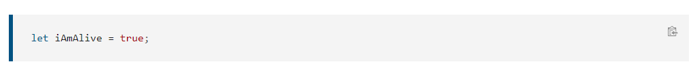

JavaScript (JS) es un lenguaje de programación ligero, interpretado, o compilado justo-a-tiempo (just-in-time) con funciones de primera clase. Si bien es más conocido como un lenguaje de scripting (secuencias de comandos) para páginas web, y es usado en muchos entornos fuera del navegador, tal como Node.js, Apache CouchDB y Adobe Acrobat. JavaScript es un lenguaje de programación basada en prototipos, multiparadigma, de un solo hilo, dinámico, con soporte para programación orientada a objetos, imperativa y declarativa (por ejemplo programación funcional). Lee más en acerca de JavaScript.
El estándar para JavaScript es ECMAScript. A partir del 2012, todos los navegadores modernos soportan completamente ECMAScript 5.1. Los navegadores viejos soportan al menos ECMAScript 3. Desde Junio 17, 2015, ECMA International publico la sexta versión principal de ECMAScript, que oficialmente se llama ECMAScript 2015, y que inicialmente se denominó ECMAScript 6 o ES6. Desde entonces, los estándares ECMAScript están en ciclos de lanzamiento anuales. Esta documentación hace referencia a la última versión preliminar, que actualmente es ECMAScript 2020.
Primeros Pasos
¿Qué es una variable?
Una variable es un contenedor para un valor, como un número que podríamos usar en una suma, o una cadena que podríamos usar como parte de una oración. Pero una cosa especial acerca de las variables es que los valores que contienen pueden cambiar. Veamos un sencillo ejemplo:
Para usar una variable, primero debes crearla — precisamente, a esto lo llamamos declarar la variable. Para hacerlo, escribimos la palabra clave var o let seguida del nombre con el que deseas llamar a tu variable:

Aquí estamos creando dos variables llamadas myName y myAge. Intenta escribir estas líneas en la consola de tu navegador web. Después de eso, intenta crear una variable (o dos) eligiendo tú su nombre.
Tipos de Varables
Hay algunos tipos de datos diferentes que podemos almacenar en variables. En esta sección, los describiremos brevemente, luego, en artículos futuros, aprenderás más detalles.
Hasta ahora hemos analizado los dos primeros, pero hay otros.
Números
Puedes almacenar números en variables, ya sea números enteros como 30 (también llamados enteros — "integer") o números decimales como 2.456 (también llamados números flotantes o de coma flotante — "number"). No es necesario declarar el tipo de las variables en JavaScript, a diferencia de otros lenguajes de programación. Cuando le das a una variable un valor numérico, no incluye comillas:

Cadena de Caracteres
Las strings (cadenas) son piezas de texto. Cuando le das a una variable un valor de cadena, debes encerrarlo entre comillas simples o dobles; de lo contrario, JavaScript intenta interpretarlo como otro nombre de variable.

Booleanos
Los booleanos son valores verdadero/falso — pueden tener dos valores, true o false. Estos, generalmente se utilizan para probar una condición, después de lo cual se ejecuta el código según corresponda. Así, por ejemplo, un caso simple sería:
